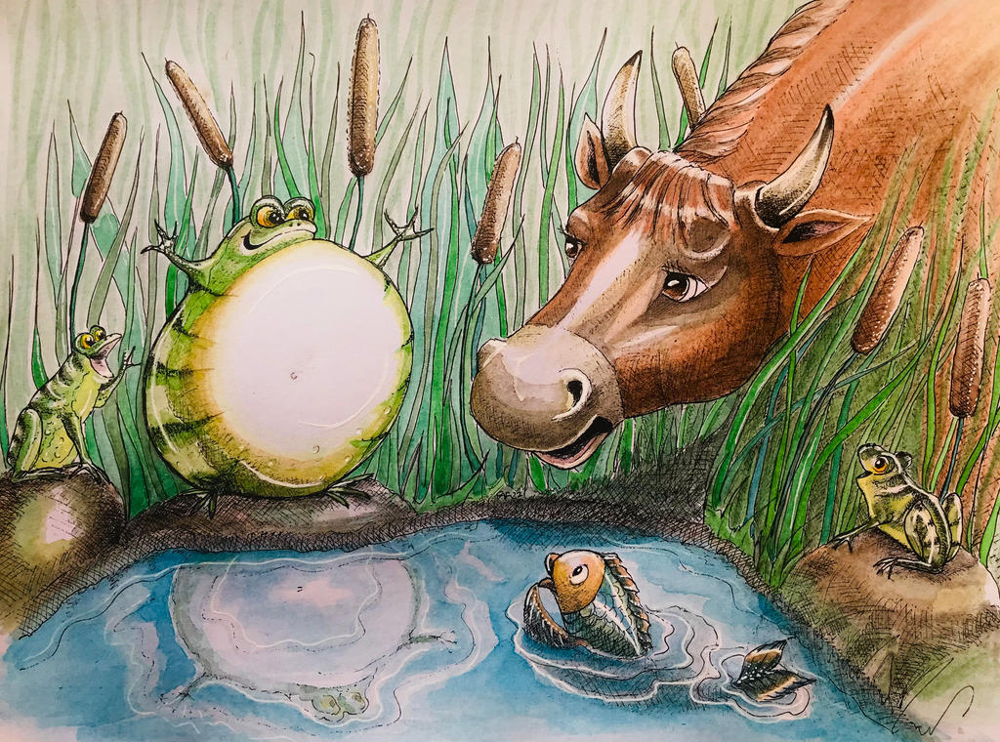

The Frog and the ox

Oh Father,”
Said a little frog to the gig one sitting by the side of a pool,
I have seen such a terrible monster !
It was as big as a mountain,
With horns on its head,
and a long tail,
And it had hoofs divided in two.”
Tush, child, tush,”
Said the old Frog,
That was only Farmer White’s Ox.
It isn’t so big either;
He may be a little bit taller than I,
But I could easily make myself quite as broad;
Just you see…”
So he blew himself out,
and blew himself out,
and blew himself out,
was he as big as that?”
asked he.
Oh, much bigger than that,”
said the young Frog.
I will not apologize for the dinner,”
said the Stork.
Bigger, father, bigger,”
was the reply.
So the frog took a deep breath,
and blew and blew and blew,
and swelled and swlled.
and then he said:
I’m sure the Ox is not as big as-
But at this moment he burst.